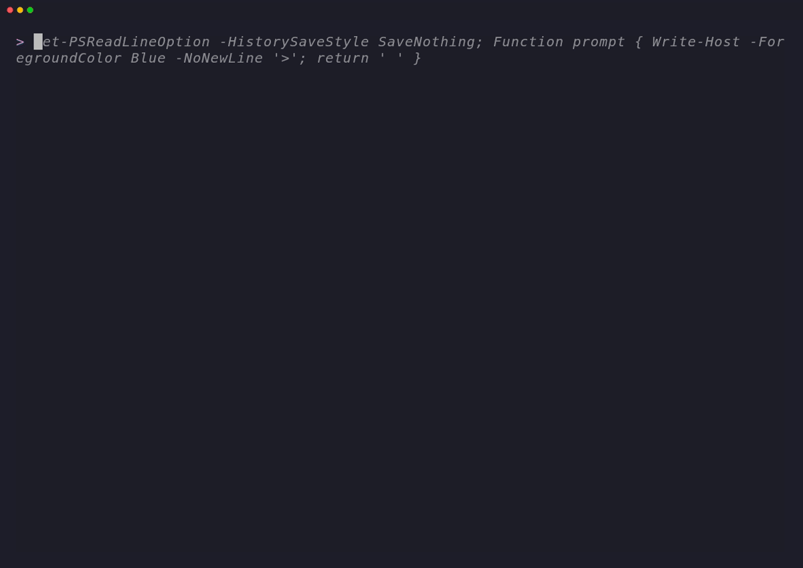
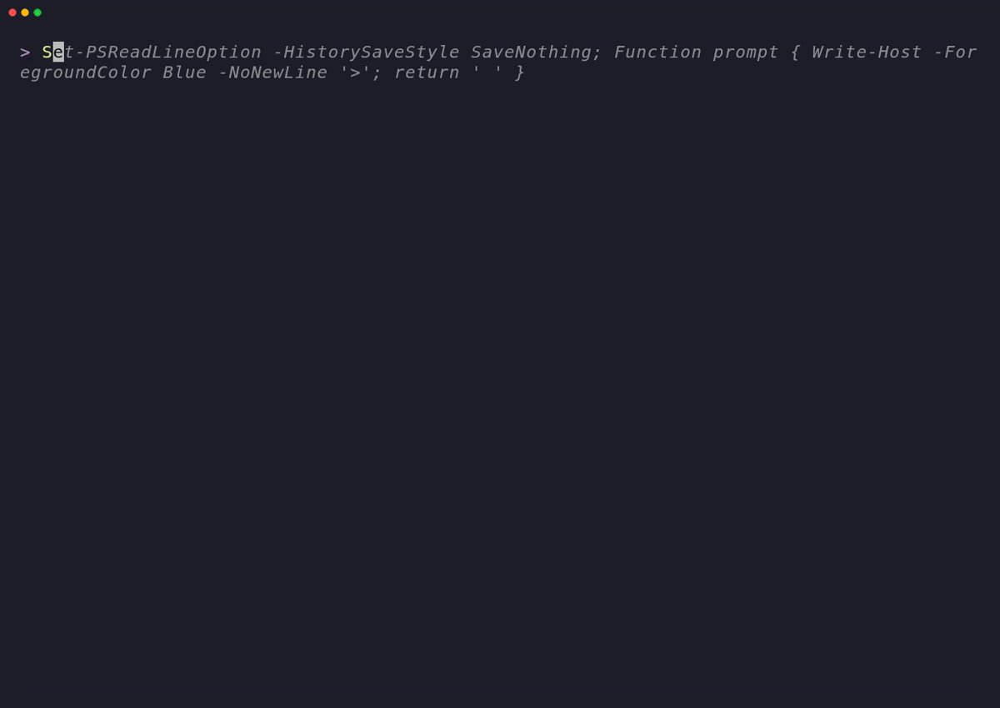
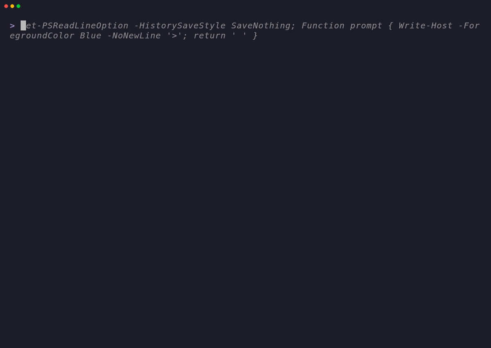

PowerShell terminal documentation
PHWriter
Render structured, themed command help for PowerShell modules and command-line tools.
VHS Showcase
Each recording is generated from a tape in the repository and shows a distinct PHWriter workflow.



Feature Overview
- 50 predefined themes — vibrant, gradient-aware, or solid retro styles matching your project’s brand.
- AST metadata extraction — zero-touch parsing of comment-based help blocks directly from source files.
- Interactive TUI pager — alt-buffer terminal scrolling supporting custom width and console resize recalculation.
- CLI router scaffolding — subcommand dispatching with fuzzy Levenshtein recommendations and auto-completion.
- Tag-padded headers — modern tag blocks for clean, high-impact version metadata.
Explore Theme Families
BaseSolid palettes for broad terminal compatibility.
GradientColour ramps for headers and borders.
ExtendedDistinctive terminal presentations and colour steps.
Hard-borderedBold frames paired with focused colour treatments.
Quick Start
Initialize, render, and page help details in seconds:
# Import the module
Import-Module PHWriter
# Render the built-in theme preview
Show-PHTheme -Name 'phwriter'
# Generate documentation with a specific theme and compact layout
New-PHWriter @MyMetadata -Theme 'cyberpunk' -Compact
Learning More
Use the sidebar navigation to read deep-dives on individual features, or explore:
- ➔ API Reference — Fully documented parameters and syntax for all cmdlets.
- ➔ Installation & Downloads — PowerShell Gallery, Chocolatey, and release assets.